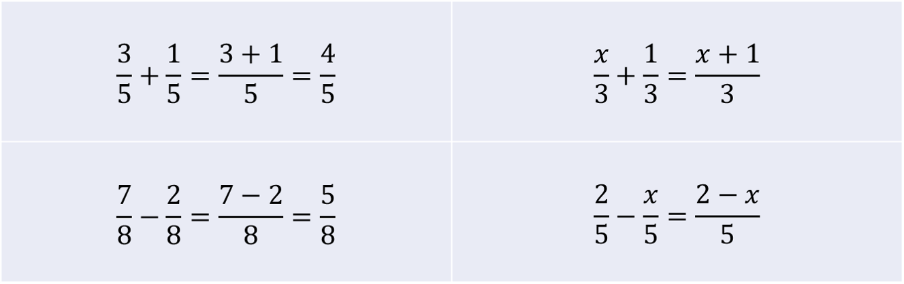
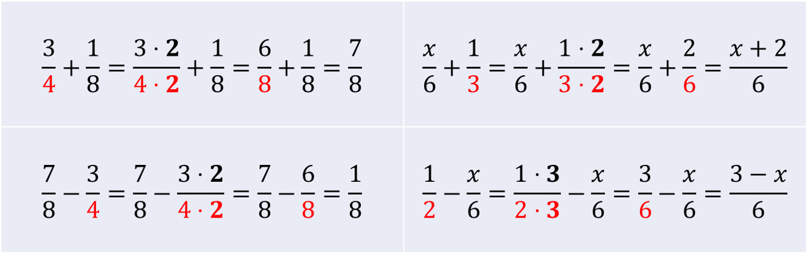
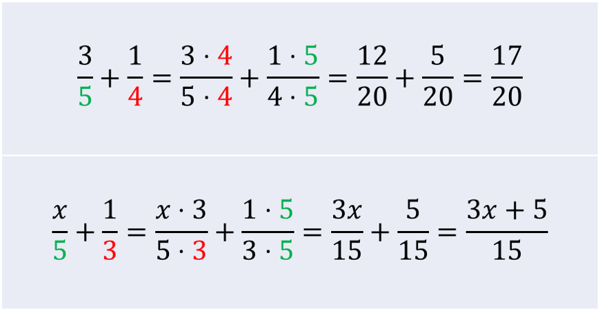
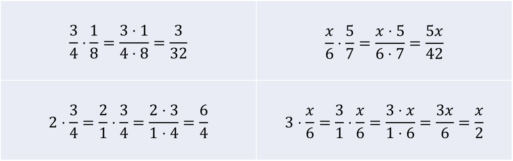
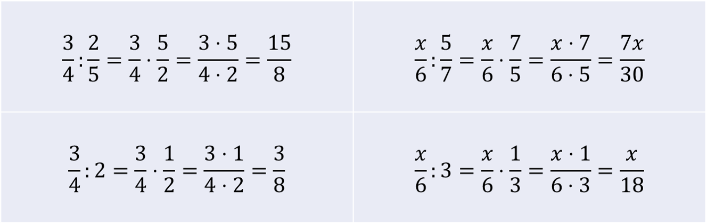

Murtoluvuilla laskeminen
Contents
Murtoluvuilla laskeminen#
Laskuissa esiintyy usein murtolukuja. Ne ovat niinsanottuja tarkkoja arvoja. Joillekin luvuille voidaan kirjoittaa tarkka arvo myös desimaalilukuna. Esimerkiksi jos yksi kakku jaettaisiin neljälle henkilölle, niin jokaisen saama \(0.25\) kakkua olisi tarkka arvo.
Usein murtoluku on kuitenkin ainoa mahdollisuus esittää laskun tulos tarkkana arvona. Jos täytekakku jaetaan kolmelle henkilölle, jokainen saa \(\frac{1}{3}\) kakusta. Se on tarkka arvo. Laskimesta saatavat luvut \(0.33\) tai \(0.333333\) tai edes \(0.3333333333333\) eivät ole tarkkoja arvoja. Aina ei ole väliä sillä, onko laskun tulos tarkka arvo vai ei, koska usein se kuitenkin pyöristetään jollakin tavalla. Tarkkojen arvojen laskeminen ja murtolukujen käsittely muutenkin on kuitenkin osa algebran yleissivistystä.
Murtoluku koostuu murtoviivan yläpuolella olevan osoittajasta ja murtoviivan alapuolella olevasta nimittäjästä. Esimerkiksi luvussa \(\frac{3}{8}\) osoittaja on 3 ja nimittäjä 8. Nimittäjä kertoo, kuinka suuria osia murtoluvussa on, ja osoittaja sen, kuinka monta kappaletta näitä on. Esimerkiksi tässä on kyseessä kahdeksasosat, joita on kolme kappaletta.
Laskusäännöt#
Laventaminen ja supistaminen
Murtoluvun osoittajan ja nimittäjän voi kertoa tai jakaa samalla luvulla. Tällöin murtoluku muuttuu eri näköiseksi, mutta sen arvo pysyy ennallaan. Kertolaskua sanotaan laventamiseksi ja jakolaskua supistamiseksi. Näitä laskutoimituksia joutuu tekemään, kun lasketaan yhteen tai vähennetään toisistaan murtolukuja, joissa on eri nimittäjät.
Laventaminen merkitään osoittajan vasempaan yläkulmaan:
Esim. a) \(\frac{^{2)}3}{7}=\frac{2\cdot 3}{2\cdot 7}=\frac{6}{14}\), b) \(\frac{^{3)}x}{5}=\frac{3\cdot x}{3\cdot 5}=\frac{3x}{15}\)
Supistaminen merkitään osoittajan oikeaan yläkulmaan:
Esim. a) \(\frac{3}{15}^{(3}=\frac{3/3}{15/3}=\frac{1}{5}\), b) \(\frac{2x}{4}^{(2}=\frac{2x/2}{4/2}=\frac{x}{2}\)
Usein tehtävien vastaus halutaan supistetussa muodossa, eli siten, että osoittaja nimittäjä ovat mahdollisimman pieniä. Mahdollisimman pienten lukujen etsiminen onnistuu siten, että kirjoitetaan osoittaja ja nimittäjä kertolaskuina ja katsotaan, onko näissä kertolaskussa sama luku. Jos on, niin tämä yhteinen luku supistuu pois. Kaikkia murtolukuja ei ole mahdollista supistaa (sanotaan, että ne ovat jo valmiiksi supistetussa muodossa). Jos osoittaja tai nimittäjä eivät ole yksittäisiä lukuja vaan esimerkiksi summia, niin kerto- tai jakolaskut pitää tehdä koko näille lausekkeille.
Esimerkkejä
a) \(\frac{14}{56}=\frac{2\cdot 7}{7\cdot 8}=\frac{2}{8}=\frac{2 \cdot 1}{2\cdot 4}=\frac{1}{4}\)
b) \(\frac{12}{25}=\frac{3 \cdot 4}{5\cdot 5}\), ei voi supistaa, antaa olla sellaisenaan
c) Laventaminen luvulla 2, kun osoittajassa summa:
\(\frac{^{2)}5+x}{5}=\frac{2\cdot 5 + 2 \cdot x}{2\cdot 5}=\frac{10+2x}{10}\)
d) Laventaminen luvulla 2, kun osoittajassa ja nimittäjässä summa:
\(\frac{^{2)}5+x}{x-3}=\frac{2\cdot 5 + 2 \cdot x}{2\cdot x - 2 \cdot 3}=\frac{10+2x}{2x-6}\)
e) Supistaminen luvulla 2, kun osoittajassa summa:
\(\frac{4+x^{(2}}{8}=\frac{4/2+x/2}{8/2}=\frac{2+\frac{x}{2}}{4}\)
Yhteen- ja vähennyslasku
Jos murtoluvuissa on sama nimittäjä, niin yhteen- tai vähennyslasku tehdään vain osoittajille, ja nimittäjä pysyy ennallaan. Jos murtoluvuissa on eri nimittäjä, laskussa esiintyvät murtoluvut pitää laventaa tai supistaa samannimisiksi. Joskus riittää supistaa tai laventaa yksi laskussa esiintyvistä murtoluvuista, joskus joutuu muokkaamaan useampaa. Seuraavissa taulukoissa on esimerkkejä erilaisista yhteen- ja vähennyslaskuista.
Kummallakin murtoluvulla on sama nimittäjä 
Toinen nimittäjä on toisen monikerta: riittää laventaa se murtoluku, jonka nimittäjä on pienempi 
Toinen nimittäjä ei ole toisen monikerta: lavenna murtoluvut toistensa nimittäjillä 
Sekaluvut
Sekaluku tarkoittaa kokonaisluvun ja murtoluvun summaa. Esimerkiksi \(2\frac{1}{4}\) tarkoittaa samaa kuin \(2+\frac{1}{4}\).
Sekaluku kannattaa muuttaa murtoluvuksi ennen muita laskutoimituksia. Nimittäjäksi valitaan sama kuin murtoluvun nimittäjä. Kokonaisluvussa 1 osoittaja on yhtä suuri kuin nimittäjä, kokonaisluvussa 2 osoittaja on 2 kertaa niin suuri kuin nimittäjä jne. Esimerkiksi \(3~\frac{2}{5}\) on \(3+\frac{2}{5}=\frac{15}{5}+\frac{2}{5}=\frac{15+2}{5}=\frac{17}{5}\).
Muunnos toisinpäin onnistuu seuraavasti: ensin etsitään luvun kokonaislukuosa, eli se luku, kuinka monta kertaa nimittäjä mahtuu osoittajaan. Esimerkiksi luvussa \(\frac{27}{8}\) kokonaislukuosa on \(3\), sillä \(3\cdot 8 = 24\) on vielä pienempi kuin osoittaja, mutta \(4\cdot 8 = 32\) olisi jo liian suuri luku. Murtolukuosan osoittaja on se luku, joka jää yli, kun murtoluvun osoittajasta vähennetään kokonaislukuosan ja nimittäjän tulo. Esimerkiksi luvussa \(\frac{27}{8}\) osoittajaksi jää \(27-3\cdot 8=27-24=3\). Nimittäjäksi jää alkuperäinen nimittäjä. Siis sekaluvuksi saadaan \(3~\frac{3}{8}\).
Esimerkkejä
a) \(3~\frac{4}{5}=3+\frac{4}{5}=\frac{3\cdot 5}{5}+\frac{4}{5}=\frac{15}{5}+\frac{4}{5}=\frac{15+4}{5}=\frac{19}{5}\)
b) \(1~\frac{3}{4}+\frac{5}{4}=1+\frac{3}{4}+\frac{5}{4}=\frac{4}{4}+\frac{3}{4}+\frac{5}{4}=\frac{4+3+5}{4}=\frac{12}{4}=3\)
tai: \(1 \frac{3}{4}+\frac{5}{4}=1+\frac{3}{4}+\frac{5}{4}=1+\frac{3+5}{4}=1+\frac{8}{4}=1+2=3\)
c) \(2~\frac{5}{8}+\frac{3}{4}=2+\frac{5}{8}+\frac{3}{4}=2+\frac{5}{8}+\frac{^{2)}3}{4}= \)
\( 2+\frac{5}{8}+\frac{6}{8}=\frac{2\cdot 8}{8}+\frac{5}{8}+\frac{6}{8}=\frac{16}{8}+\frac{5}{8}+\frac{6}{8}=\frac{16+5+6}{8}=\frac{27}{8}\)
d) \(\frac{19}{7}=2~\frac{5}{7}\), sillä \(2+\frac{5}{7}=\frac{14}{7}+\frac{5}{7}=\frac{14+5}{7}=\frac{19}{7}\)
Kerto- ja jakolasku
Murtolukujen kertolaskussa osoittajat kerrotaan keskenään ja nimittäjät kerrotaan keskenään. Nimittäjien ei tarvitse olla keskenään samat, kuten yhteen- tai vähennyslaskussa! Lopputuloksen voi mielellään supistaa, jos se on mahdollista, eli jos osoittaja ja nimittäjä ovat samalla luvulla jaollisia. Kokonaisluvut voidaan muuttaa murtoluvuiksi, joissa nimittäjä on 1.

Kun murtoluku jaetaan toisella murtolukuvulla, niin jaettava kerrotaan jakajan käänteisluvulla. Käänteisluku tarkoittaa sitä, että osoittajan ja nimittäjä vaihdetaan keskenään. Esimerkiksi luvun \(\frac{2}{5}\) käänteisluku on \(\frac{5}{2}\). Kokonaisluvullakin on käänteisluku: luvun \(a\) käänteisluku on \(\frac{1}{a}\).

Esimerkkejä kerto- ja jakolaskuista
a) \(\frac{3}{8}\cdot \frac{2}{4}=\frac{3\cdot 2}{8\cdot 4}=\frac{^{2)}6}{32}=\frac{3}{16}\)
b) \(\frac{3}{5}\cdot \frac{7}{4}=\frac{3\cdot 7}{5\cdot 4}=\frac{21}{20}\)
c) \(3 \cdot \frac{5}{4}=\frac{3}{1}\cdot \frac{5}{4}=\frac{3\cdot 5}{1\cdot 4}=\frac{15}{4}=3\frac{3}{4}\)
d) \(\frac{3}{4}:\frac{7}{9}=\frac{3}{4}\cdot \frac{9}{7}=\frac{3 \cdot 9}{4 \cdot 7}=\frac{27}{28}\)
e) \(\frac{15}{4}:3=\frac{15}{4}\cdot \frac{1}{3}=\frac{15\cdot 1}{4\cdot 3}=\frac{15}{12}^{(3}=\frac{5}{4}=1 \frac{1}{4}\)